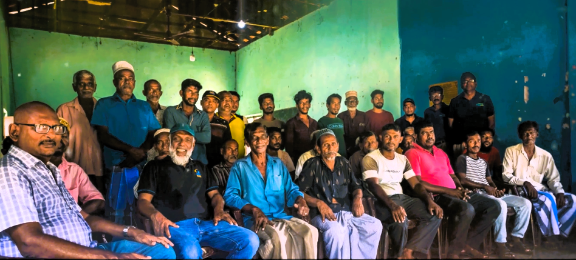
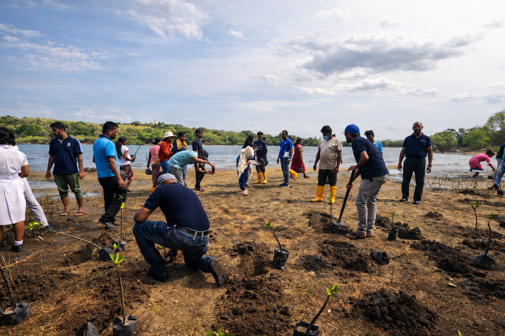
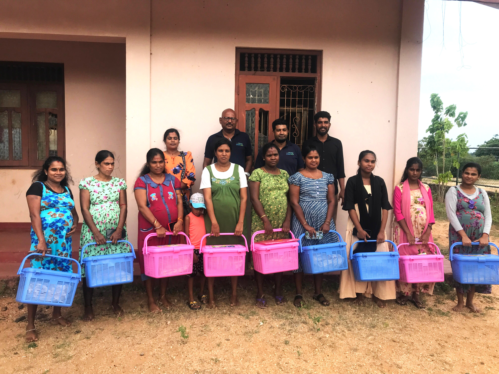

Our Focus Areas

Community & Social Development
Empowering coastal communities through sustainable livelihoods and education initiatives.

Coastal & Marine Conservation
Protecting biodiversity and restoring fragile marine ecosystems.

Blue Carbon & Climate Change
Mangrove restoration and carbon sequestration for long-term climate impact.

Women & Children Wellbeing
Supporting inclusive development programs that strengthen vulnerable communities.